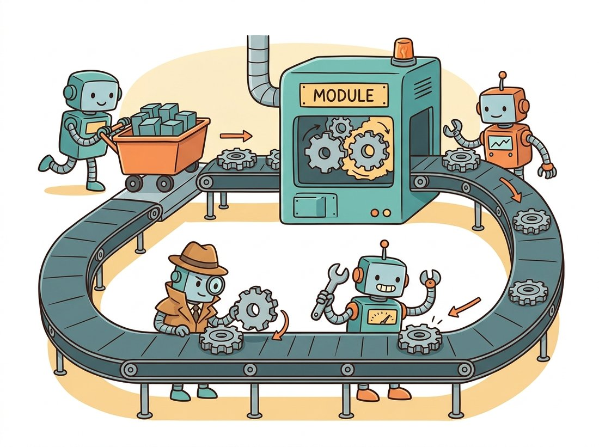

"I am just an array who keeps a diary. Every operation you do to me, I write down. Ask me to look back, and I will hand you the gradient, no derivation required."
A Tensor With Excellent Record-Keeping Habits
PyTorch gives you three abstractions, and every model in Part III is built from exactly these three: the Tensor (a GPU-aware array), autograd (an engine that records your operations and replays them backward to produce gradients automatically), and nn.Module (a container that holds parameters and defines a forward pass). This section builds and exercises all three by hand, reproducing the from-scratch backward pass of Section 18.2 with a single loss.backward() call, so you understand what the framework automates before you depend on it.
The previous two sections were deliberately framework-free: the NumPy MLP and its hand-written backward pass would be true in any language. Now we adopt PyTorch, the framework this book uses throughout Part III and Part IV, because writing backward passes by hand does not scale to real networks. PyTorch's promise is that you write only the forward pass and it computes the backward pass for you, exactly the gradients you derived in Section 18.2, automatically and correctly, for any composition of operations. Understanding how it delivers on that promise is the difference between using PyTorch and debugging it.
1. The Tensor Beginner
A PyTorch Tensor is a multi-dimensional array, much like a NumPy ndarray, with two superpowers: it can live on a GPU, and it can track the operations performed on it for automatic differentiation. Its anatomy is a shape, a dtype (usually float32 for training), and a device (cpu or cuda). Tensors interoperate with NumPy almost transparently, which is why the transition from the last two sections is gentle. The code shows the essentials: creation, shape inspection, and the broadcasting rules that let a small tensor combine with a large one without explicit loops.
# Tensor essentials: creation with a shape and dtype, broadcasting a small
# bias across rows, the view-versus-reshape memory distinction, and the
# zero-copy NumPy bridge that makes porting the earlier sections trivial.
import torch
x = torch.randn(4, 3) # 4x3 tensor, float32 on CPU by default
print(x.shape, x.dtype, x.device) # torch.Size([4, 3]) torch.float32 cpu
# broadcasting: a (3,) bias adds to every row of the (4,3) tensor
bias = torch.tensor([1.0, 2.0, 3.0])
y = x + bias # shapes (4,3) and (3,) align on the last axis
print(y.shape) # torch.Size([4, 3])
# reshape vs view: view shares storage, reshape may copy
flat = x.reshape(-1) # (12,) where the -1 size is inferred
img = flat.view(2, 6) # (2, 6) sharing the same memory as flat
print(flat.shape, img.shape) # torch.Size([12]) torch.Size([2, 6])
# numpy bridge (shares memory on CPU)
import numpy as np
back = x.numpy(); again = torch.from_numpy(np.ones((2, 2), dtype=np.float32))
print(type(back), again.shape) # <class 'numpy.ndarray'> torch.Size([2, 2])torch.randn creates a float32 CPU tensor, a length-3 bias broadcasts across every row of the (4, 3) tensor, view shares storage while reshape may copy, and .numpy() / torch.from_numpy bridge to NumPy without copying. The printed shapes and dtypes verify each operation.
Two subtleties bite beginners. First, the difference between an in-place operation (a trailing underscore, like x.add_(1), which modifies x) and its out-of-place sibling (x.add(1), which returns a new tensor); in-place ops save memory but can corrupt the graph autograd needs. Second, view requires contiguous memory and shares storage, while reshape falls back to a copy when it must, a distinction that matters when you flatten the spatial dimensions of an image tensor before a linear layer, as Chapter 19 will do constantly. The contiguity requirement has a concrete cause: an axis-reordering operation like the permute of subsection 5 leaves a tensor whose logical layout no longer matches its physical memory order, so view (which only reinterprets the existing bytes) cannot produce the new shape and raises an error, whereas reshape silently copies into a fresh contiguous buffer. This is why a permute followed by view is one of the most common runtime errors in vision code, and calling .contiguous() before the view, or just using reshape, is the fix.
2. Autograd: The Engine That Replays Backward Intermediate
Set requires_grad=True on a tensor and PyTorch begins recording every operation that touches it into a dynamic computation graph, the same graph drawn in Figure 18.2.1, built on the fly as your Python runs (this is called define-by-run). Calling .backward() on a scalar loss walks that graph in reverse, applying the chain rule node by node, and deposits the gradient of the loss with respect to each leaf tensor into its .grad attribute. The snippet reproduces the exact MLP backward pass we wrote out by hand in Section 18.2, now with autograd doing the six lines of derivative work for us. The illustration below captures the diary metaphor behind this recording.
# Autograd reproduces Section 18.2's hand-written backward pass: we write only
# the forward pass on leaf tensors that require grad, then a single
# loss.backward() call computes every parameter gradient automatically.
import torch
torch.manual_seed(3)
batch, d, H, C = 16, 20, 32, 4
X = torch.randn(batch, d)
y = torch.randint(0, C, (batch,))
# scale FIRST, then mark each tensor as a leaf that requires grad, so
# .grad is populated directly (scaling a requires_grad tensor would make
# it a non-leaf and .grad would stay None without retain_grad())
W1 = (torch.randn(H, d) * (2.0 / d) ** 0.5).requires_grad_(True)
b1 = torch.zeros(H, requires_grad=True)
W2 = (torch.randn(C, H) * (2.0 / H) ** 0.5).requires_grad_(True)
b2 = torch.zeros(C, requires_grad=True)
# ---- forward only; no manual backward needed ----
a1 = torch.relu(X @ W1.t() + b1)
logits = a1 @ W2.t() + b2
loss = torch.nn.functional.cross_entropy(logits, y)
loss.backward() # autograd computes EVERY gradient here
print(round(loss.item(), 4), W1.grad.shape, W2.grad.shape) # e.g. 1.4872 [32, 20] [4, 32]
print(logits.grad_fn) # <AddBackward0 ...> the recorded backward oploss.backward() fills W1.grad, W2.grad, and the rest. The scale-then-requires_grad_ ordering keeps each weight a leaf so its .grad is populated, and the printed logits.grad_fn reveals the recorded backward op.
The grad_fn printed at the end is the breadcrumb autograd leaves on every tensor produced by a tracked operation; following the chain of grad_fn pointers from the loss backward is exactly the reverse traversal. When a gradient comes out as None or a backward pass throws, inspecting grad_fn is the first debugging move. Two control mechanisms are essential in practice: with torch.no_grad(): disables graph recording (use it during validation and inference to save memory, since you will not call backward), and tensor.detach() returns a copy cut out of the graph (use it when you want a value but not its gradient history, for example when logging a metric).
PyTorch adds each new backward pass's gradients into .grad rather than overwriting them. This is deliberate (it enables gradient accumulation across micro-batches) but it means that if you forget to reset gradients to zero before each training step, every step's gradient is polluted by all previous steps. The single most common silent training bug for beginners is a missing optimizer.zero_grad(). The correct ritual per step is: zero the gradients, forward, compute loss, backward, step. Get that order wrong and the network either fails to learn or learns something bizarre, with no error message to tell you why.
The tensor's "diary" habit is wonderful right up until you forget to tear out yesterday's page. A missing optimizer.zero_grad() is the most polite catastrophe in deep learning: no exception, no red text, no crash, just a model that quietly learns the sum of every gradient it has ever seen and produces nonsense with total confidence. Generations of beginners have lost an afternoon to it. Zero, forward, loss, backward, step, in that order, every batch, is the five-beat ritual that keeps the diary honest.
3. nn.Module: Organizing Parameters and Forward Passes Beginner
Tracking loose W1, b1, W2, b2 tensors does not scale. nn.Module is the container that solves this: you subclass it, declare your layers as attributes in __init__, and define the forward pass in forward. The module then automatically registers every parameter, so model.parameters() hands the whole list to your optimizer, model.to(device) moves them all to the GPU at once, and model.state_dict() serializes them for checkpointing (Section 18.5). The code rebuilds the MLP as a proper module and confirms its parameter inventory.
# The MLP rebuilt as a proper nn.Module: layers declared as attributes are
# auto-registered, so model.parameters() hands the whole list to an optimizer
# and model.to(device) moves every weight at once. A forward pass confirms shapes.
import torch
import torch.nn as nn
class MLP(nn.Module):
def __init__(self, in_dim=784, hidden=128, n_classes=10):
super().__init__()
self.net = nn.Sequential(
nn.Flatten(), # (B, 1, 28, 28) -> (B, 784)
nn.Linear(in_dim, hidden), # default Kaiming-uniform init (a=sqrt(5))
nn.ReLU(),
nn.Linear(hidden, n_classes), # logits; no softmax here (CE does it)
)
def forward(self, x):
return self.net(x)
model = MLP()
n_params = sum(p.numel() for p in model.parameters())
print(model.net[1].weight.shape, "params:", n_params) # [128, 784] params: 101770
# a forward pass on a fake batch of one 28x28 grayscale image
dummy = torch.randn(8, 1, 28, 28)
out = model(dummy)
print(out.shape) # torch.Size([8, 10])nn.Module: layers declared inside nn.Sequential are auto-registered, so sum(p.numel() ...) reports the full 101,770-parameter count, nn.Flatten turns a (8, 1, 28, 28) image batch into vectors, and the final nn.Linear emits raw logits because cross-entropy applies softmax internally. The forward pass returns the expected (8, 10) logits.
Two conventions in that code are non-negotiable house style. The final layer outputs raw logits, the learned-classifier descendant of the linear scorers that ended Part II's recognition pipelines in Chapter 16, not probabilities, because nn.CrossEntropyLoss fuses the softmax and the log for numerical stability (applying softmax yourself and then cross-entropy is a classic double-softmax bug). And the model takes a 4D tensor (batch, channels, height, width), the canonical PyTorch image layout, even though this MLP immediately flattens it; keeping that layout means the same data pipeline (Section 18.4) feeds both this MLP and the CNNs of Chapter 19 unchanged. Figure 18.3.1 maps how the three abstractions fit together in a single training step.
forward using its parameters to produce logits and a loss. Autograd's .backward() fills each parameter's .grad, and the optimizer's .step() updates the parameters in place (green dashed loop), ready for the next batch.Compare the autograd snippet of subsection 2, which juggled four loose tensors, manual initialization scaling, and explicit requires_grad_ bookkeeping, with the MLP module of subsection 3. The module version is shorter, and it gives you model.parameters() for the optimizer, model.to('cuda') to move every weight to the GPU in one call, model.train() and model.eval() to toggle layers like dropout and batch norm, and model.state_dict() for checkpointing, none of which the loose-tensor version has. For a real network with dozens of layers, hand-tracking parameters is not merely tedious but error-prone; nn.Module is the abstraction that makes scaling to a hundred layers a non-event. The cartoon below recasts that same training step as a looping assembly line.

Who: A computer-vision intern shipping a first PyTorch model for a retail shelf-monitoring product.
Situation: Validation accuracy bounced wildly between epochs, sometimes far below training accuracy, sometimes above it, with no pattern. The intern suspected a data leak and spent a day auditing the splits.
Problem: The validation loop never called model.eval(). Dropout layers stayed active during validation, randomly zeroing units, and batch-normalization layers kept updating their running statistics from validation batches, so the model being evaluated was effectively different (and noisier) each pass. The splits were fine; the mode was wrong.
Decision: Wrap validation in model.eval() and torch.no_grad(), and switch back to model.train() at the top of each training epoch. Two lines.
Result: Validation accuracy stabilized immediately, its epoch-to-epoch swing dropping from roughly 6 percent to under 0.5 percent, and read consistently about 2 points below training accuracy, the expected healthy gap. The day of split-auditing found nothing because nothing was wrong with the splits.
Lesson: train() and eval() are not cosmetic; they change the behavior of dropout and normalization layers. Forgetting eval() at validation, or train() at the start of training, produces confusing metrics with no error, exactly the kind of bug the explicit loop of Section 18.5 is structured to prevent.
4. Functional versus Object Layers Intermediate
PyTorch offers most operations in two forms: as stateful objects in torch.nn (like nn.ReLU(), nn.Linear) and as stateless functions in torch.nn.functional (like F.relu, F.cross_entropy). The rule of thumb: use the object form for anything with learnable parameters or mode-dependent behavior (linear layers, convolutions, dropout, batch norm) so the module registers and manages them; use the functional form for pure, parameter-free operations inside forward when it reads more cleanly. The cross-entropy in subsection 2 used the functional form; the ReLU inside the Sequential used the object form. Both are correct; mixing them thoughtlessly for parameterized layers is where bugs hide, because a functional-style dropout will not respond to model.eval().
5. Reading and Debugging Shapes Intermediate
Here is a number that should change how you debug: across the lifetime of almost every PyTorch practitioner, the single most frequent error message is not an exotic autograd failure or a CUDA crash but a plain shape mismatch, and the overwhelming majority of those are caught in seconds by printing .shape at each step. Learn to read shapes fluently now and you sidestep the most common time sink in all of Part III. The canonical image batch is (N, C, H, W): batch size, channels, height, width. A linear layer expects (N, features), which is why nn.Flatten sits between them. Two operations deserve fluency because the rest of Part III leans on them: permute reorders axes (turning the (N, C, H, W) of a CNN into the (N, H*W, C) sequence a transformer wants in Chapter 22), and unsqueeze/squeeze add or remove a size-1 axis (often to make broadcasting line up). When a matrix multiply complains, read the two shapes it printed and ask which axis was supposed to be the contracted one; the answer is almost always a missing flatten, a transpose, or a stray batch dimension.
PyTorch's define-by-run model is wonderfully flexible for research but historically slower than statically compiled frameworks. The 2.x line closed that gap with torch.compile (Ansel et al., 2024), which traces your eager Python into an optimized graph using the TorchDynamo and TorchInductor stack, often delivering large speedups from a single wrapping call model = torch.compile(model) with no code change. Complementary 2024 to 2026 work, FlexAttention for custom attention patterns and the maturing torch.export path for deployment, keeps the same eager authoring experience while removing its runtime cost. The mental model in this section, tensors flowing through a recorded graph, is exactly what the compiler optimizes; understanding the eager semantics first is what lets you reason about when the compiler will help and when a data-dependent control-flow branch will force it to fall back.
Explain precisely what goes wrong if a training loop computes loss.backward() and optimizer.step() on each batch but never calls optimizer.zero_grad(). Describe the trajectory of the effective gradient over the first three steps, why the loss might still appear to decrease for a while, and how you would diagnose the bug by inspecting param.grad magnitudes. Then state the one legitimate use case where deliberately not zeroing between sub-steps is correct.
Take the from-scratch NumPy backward pass from Section 18.2 and the autograd version in subsection 2 of this section, and feed both the identical arrays rather than two separately seeded RNG streams (NumPy and PyTorch generators do not match, so build X, y, and the weights once in NumPy and bring them into PyTorch with torch.from_numpy, making each weight a leaf with requires_grad_(True)). Confirm that W1.grad from autograd matches your NumPy dW1 to floating-point tolerance for every entry. Then deliberately introduce an in-place operation that breaks the graph (for example a1.relu_() on a tensor that requires grad) and report the exact error PyTorch raises, explaining why in-place ops can be unsafe for autograd.
Starting from a batch of RGB images shaped (32, 3, 224, 224), write the sequence of tensor operations that produces each of the following, and state the resulting shape at each step: (a) the input to a linear classifier head; (b) a token sequence for a vision transformer treating each pixel as a token; (c) a per-channel mean over the spatial dimensions (global average pooling). For each, identify whether you used flatten, permute, reshape, or a reduction, and explain why that choice preserves or reorders the data correctly.